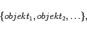
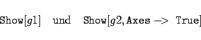
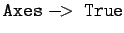

Inhalt Index DeskTop Bronstein

 Computeralgebrasysteme Graphik in Computeralgebrasystemen Graphik mit Mathematica Syntax der Graphikdarstellung
Computeralgebrasysteme Graphik in Computeralgebrasystemen Graphik mit Mathematica Syntax der Graphikdarstellung


Wenn ein graphisches Objekt aus den Primitiven aufgebaut werden soll, ist zunächst eine Liste der entsprechenden Objekte mit ihren Hauptangaben zu erstellen, etwa in der Form
|  | (20.81a) |
wobei die Objekte selbst wieder Listen von Graphikobjekten sein können. So sei Objekt 1 z.B.
Aus den erzeugten Objekten werden zwei unterschiedliche Graphiklisten festgelegt:
|  | (20.81b) |
erhält man die in der Abbildung dargestellten Bilder.
Beim Aufruf des zweiten Bildes wurde die Option  eingefügt. Das führt zur Ausgabe des Achsenkreuzes mit einer von Mathematica gewählten Markierung auf den Achsen und der entsprechenden Skalierung.